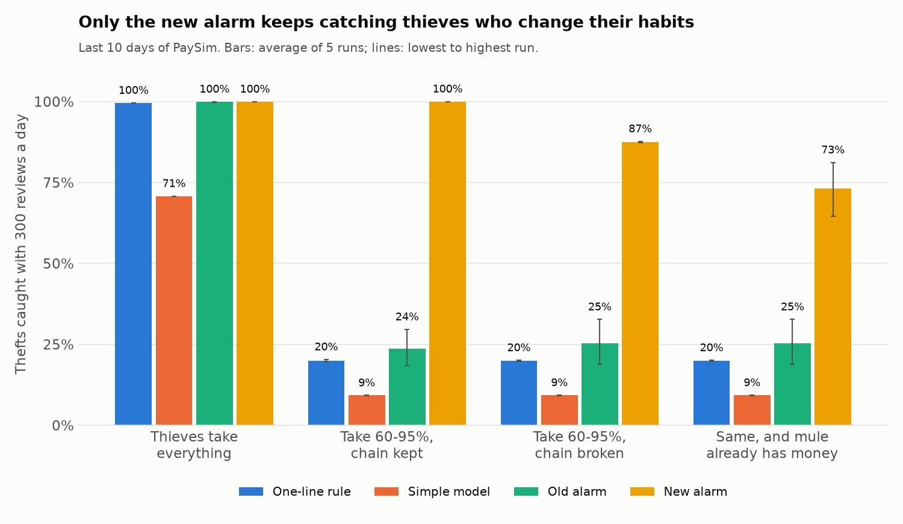

A fraud alarm that still works when thieves change their habits
Public notebooks on mobile money fraud often report about 99% accuracy. I checked that claim on 6.36 million simulated transactions, found why it misleads, and built an alarm that catches most thefts even when thieves change how they steal. Every alert comes with its reasons in plain words, and the demo runs in the visitor's browser.
The problem
In 2024 Cameroon handled 65% of all mobile money transactions in the CEMAC zone (BEAC). When a thief gets into a wallet through a fake MTN or Orange call, a "wrong transfer" SMS or a SIM swap, the money usually leaves the same way: a transfer to a middleman account (a mule), then a cash-out at an agent. An operator has to catch that while it happens, without calling thousands of honest customers.
What "99% accuracy" hides
I started from a public project, fcamuz/fraud-detection-for-mobile-transactions, and repeated its method on PaySim, a simulation of an African mobile money service built from a real operator's logs.
Balanced data, random split
Shrinking honest transactions to match the thefts 50/50 and splitting at random gives 98.6% accuracy, the kind of number these notebooks report.
Real traffic, later days
The same model on the last ten days scores 97.9%, lower than the 99.1% you get by calling every transaction honest. 2,566 of its 5,152 alerts are innocent customers.
A giveaway in the data
In PaySim, 97.8% of thefts send the exact balance of the account and honest transactions never do. A one-line rule catches 99.6% of thefts, so a high score here says little about real fraud.
Testing against smarter thieves
The test always uses days 22-31, which no model saw. A fraud team reviews 300 alerts a day. I then changed the thefts the way a thief who knew the rule would: leave 5-40% of the money behind, stop the transfer and cash-out amounts from matching, and use a mule account that already holds money. Each result is the average of five runs.

| How thieves behave | One-line rule | Simple model | Old alarm | New alarm |
|---|---|---|---|---|
| Take the whole balance (as simulated) | 99.6% | 70.8% | 99.9% | 100% |
| Take 60-95%, amounts still match | 20.0% | 9.2% | 23.7% | 100% |
| Take 60-95%, amounts no longer match | 20.0% | 9.2% | 25.3% | 87.4% |
| Same, and the mule already holds money | 20.0% | 9.2% | 25.3% | 73.1% (65-81%) |
In the hardest test the new alarm stops 96.5% of the stolen money (about 3.50 of 3.63 billion units over ten days), because it catches the large thefts first. The old alarm stops 76.8%.
How it's built
Each step is a separate script, and one command runs them all. GitHub runs the tests on every push.
The code that matters
Two short excerpts from the repository, shortened only.
History without peeking at the future
Each clue about the receiving account counts only earlier hours. The window stops one hour before the current transaction, so the model never learns from something the operator couldn't have known yet.
count(*) OVER ( PARTITION BY dest ORDER BY step RANGE BETWEEN UNBOUNDED PRECEDING AND 1 PRECEDING ) AS dest_prior_in_count
Practising against smarter thieves
Training gets extra copies of each theft in which the thief takes only part of the balance, some with the transfer and cash-out amounts matching and some not. The model can't lean on "whole balance sent" any more.
fraud = part[part.is_fraud == 1]
extra = take_part(fraud, rng, 0.5, 0.95,
keep_pairs=True)
split = take_part(fraud, rng, 0.5, 0.95,
keep_pairs=False)
train = pd.concat([part, extra, split])Decisions and why
Score by a daily review budget
An operator can call a fixed number of customers a day. I measure thefts caught within 300 reviews a day, not accuracy, which rewards ignoring rare events.
Leave out after-transaction balances
They contain simulator quirks that give the answer away, and they aren't known when the request arrives.
Run the alarm in the browser
Free hosting for a Python server was no longer available, so I exported the 162 trees and an exact SHAP routine to JavaScript. Answers are instant and the visitor's numbers never leave their device.
Limitations
- PaySim is simulated, not MTN or Orange data. These results show how to build and test an alarm, not how well it would work inside an operator.
- The simulator has habits real fraud may not: thieves empty the account, mule accounts start at zero, and honest traffic falls sharply in the last ten days.
- The new alarm practised on thefts close to two of the tests. The mule-with-money test (73%) is the fairer one.
- Money is in the simulation's own units; the website shows them as FCFA only to make them easy to read.
Built by Bih Brandy Sango with Python, DuckDB, pandas, LightGBM, scikit-learn, SHAP, FastAPI, Streamlit, JavaScript, pytest and GitHub Actions. Data: PaySim (Lopez-Rojas, Elmir and Axelsson, 2016) via Kaggle, CC BY-SA 4.0. Code on GitHub.